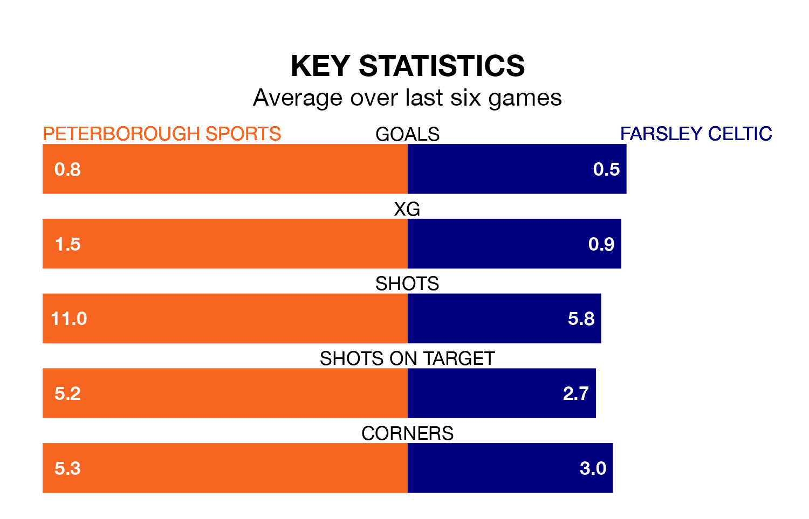

Peterborough Sports host Farsley Celtic on Tuesday at Lincoln Road in the National League North.
In their last league match, on December 26, Peterborough Sports beat Bishop's Stortford 2-0 away.
Farsley Celtic lost, 2-0 away at Scunthorpe United.
Farsley Celtic are 21st in the table after 42 games, of which they have won 11 and drawn 14, earning 47 points.
Peterborough Sports are five places ahead of the away team in 16th, with 14 wins and 10 draws putting them on 52 points.
With 36 goals in 42 games so far this season, Farsley Celtic are the league's third-lowest scorers with 0.9 goals per game. And they are conceding at an average rate, letting in 55 goals at a rate of 1.3 per game.
The hosts are also below average scorers, with 1.2 goals per game, compared to a league average of 1.3. They have conceded 1.5 goals per game.
Over the last two years, Peterborough Sports and Farsley Celtic have played each other twice. Peterborough Sports won one of them and they drew the other.
Their last meeting was on March 25 2023, when they played out a 1-1 draw.
Peterborough Sports are in mixed form in the National League North, with three wins and three losses from their last six games.
With two wins and three draws over that period, Farsley Celtic's form is similar – they have both taken nine points from 18.
Updated: 16:41 (UTC), 04/04/24